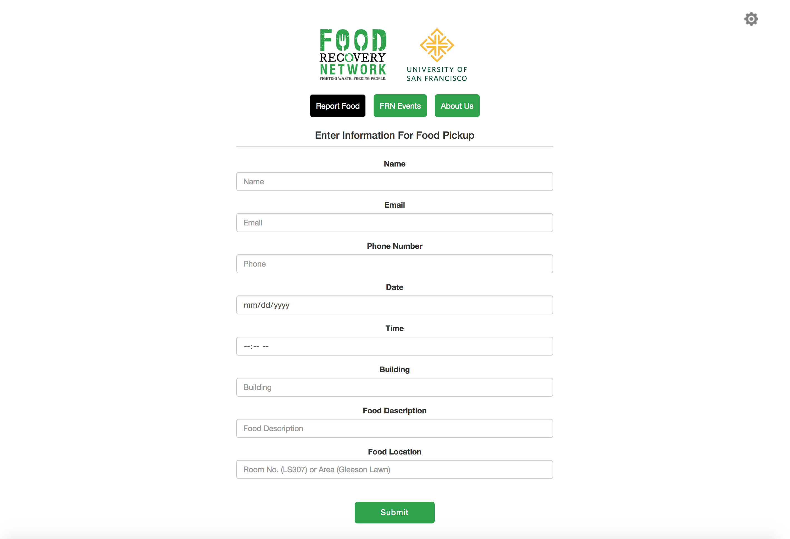
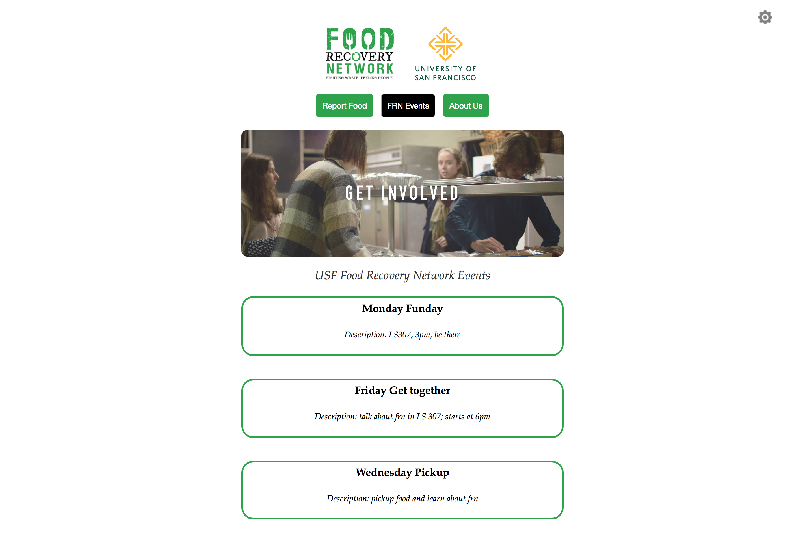
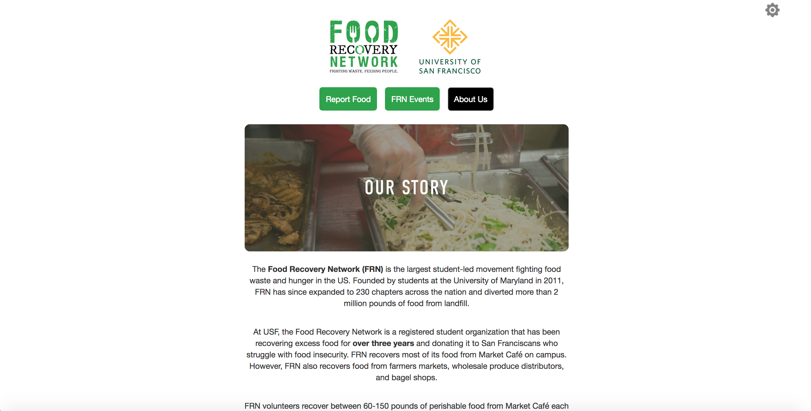
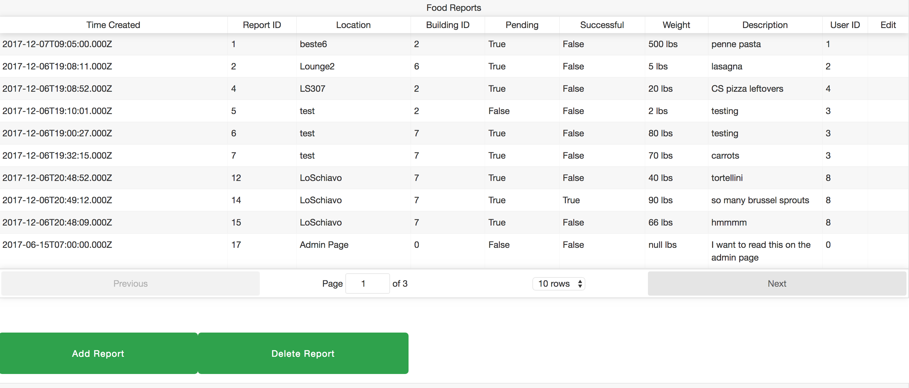

Home page of the application (used to submit food waste reports):

Events page of the application (shows local FRN meetups/events):

About Us page of the application (shows information about FRN):

Authentication for FRN administrators (allows FRN admins to view and edit the database):
Administrator page of the application (shows food waste information in the database):

The links below are old assignments from my Data Visualization course:
I used the following examples to help myself get started on this assignment: https://bl.ocks.org/mbostock/3885304, https://bl.ocks.org/mbostock/3883245, http://bl.ocks.org/weiglemc/6185069